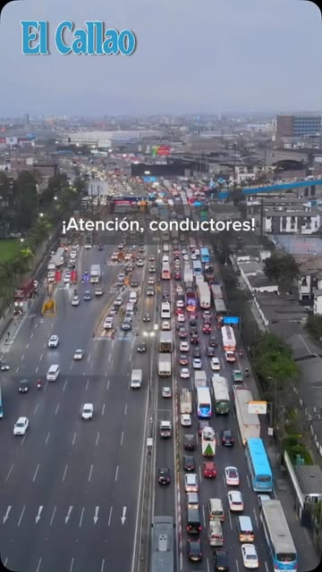
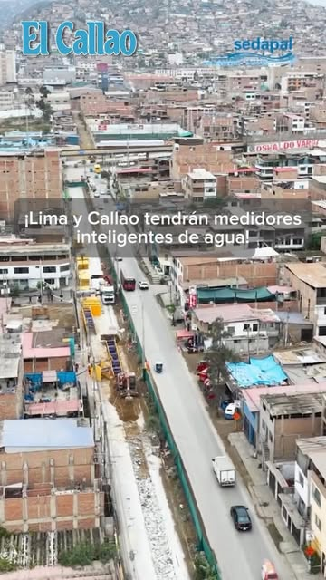

¿Quieres ver al papa León XIV en el Perú? Así consigues entradas gratis

TránsitoCierran un tramo de la avenida Canadá por 11 meses
Cerca de 800 mil jubilados de la ONP recibirían un bono de S/200 en diciembre
¡Histórico para el Callao! La tuneladora Micaela llegó a Carmen de la Legua
- El Vaticano confirma: el papa León XIV visitará el Perú del 11 al 17 de noviembre
- ¿Quieres ver al papa León XIV en el Perú? Así consigues entradas gratis
- Cierran un tramo de la avenida Canadá por 11 meses
- Días no laborables por la visita del papa: no son feriados y las horas se recuperan
- Cerca de 800 mil jubilados de la ONP recibirían un bono de S/200 en diciembre
- ¡Histórico para el Callao! La tuneladora Micaela llegó a Carmen de la Legua
- ¡Histórico para el Callao! La tuneladora Micaela llegó a Carmen de la Legua
- El Primer Campeón recibe en casa a FC Cajamarca
- Cerca de 800 mil jubilados de la ONP recibirían un bono de S/200 en diciembre
- Días no laborables por la visita del papa: no son feriados y las horas se recuperan
- Cierran un tramo de la avenida Canadá por 11 meses
Imperdibles
Familias carmelinas se preparan para recibir al papa León XIV
Sedapal instala 3,452 medidores inteligentes de agua en Lima y el Callao

ServiciosEl medidor de agua entra en la era digital en Lima y el Callao
Qué días no se trabajará en cada región por la visita del papa
Todas las noticias
Visita papal
El Vaticano confirma: el papa León XIV visitará el Perú del 11 al 17 de noviembre
Recorrerá Lima, Chiclayo, Cusco y Pucallpa. En Lima y el Callao, el Gobierno fijó días no laborables compensables el 11, 12 y 16 de noviembre.
Leer másVideo
Visita papal
¿Quieres ver al papa León XIV en el Perú? Así consigues entradas gratis
El diario explica en un video cómo conseguir entradas gratuitas para los actos del papa en el Perú.
Leer másVideo
Tránsito
Cierran un tramo de la avenida Canadá por 11 meses
¡Atención, conductores! El cierre de un tramo de la Av. Canadá durará 11 meses.
Leer más
Trabajo
Días no laborables por la visita del papa: no son feriados y las horas se recuperan
Los días no laborables compensables no son feriados: las horas no trabajadas se recuperan después.
Leer más
Economía
Cerca de 800 mil jubilados de la ONP recibirían un bono de S/200 en diciembre
El bono extraordinario para pensionistas de la ONP se pagaría en diciembre.
Leer másVideo
Metro de Lima y Callao
¡Histórico para el Callao! La tuneladora Micaela llegó a Carmen de la Legua
La tuneladora Micaela, que excava el túnel del Metro, llegó a Carmen de la Legua.
Leer más
Carmen de la Legua
Familias carmelinas se preparan para recibir al papa León XIV
Vecinos de Carmen de la Legua preparan carteles de bienvenida para el papa.
Leer más
Servicios
Sedapal instala 3,452 medidores inteligentes de agua en Lima y el Callao
Sedapal instaló 3,452 medidores inteligentes de agua en Lima y el Callao.
Leer más